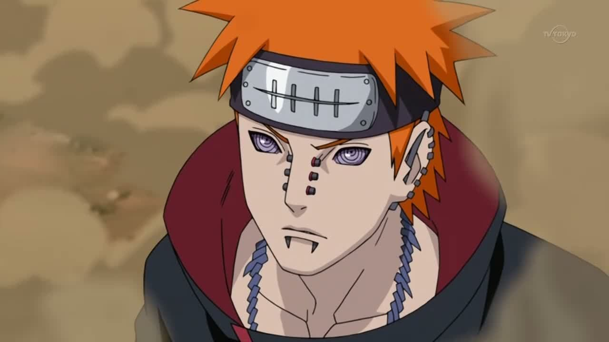

Пейн
Пейн (настоящее имя Нагато) – лидер криминальной организации Акацуки, преступник уровня S. Имя Пейн очень созвучно с английским слово «pain», что значит – боль (намек на мечту Пейна – сделать как можно больнее всему миру). Пейн – ниндзя-предатель с Амегакуре. Все члены Акацуки называют его лидером, кроме Конан, которая называет его по имени. Но, на самом деле, Пейн не лидер организации, потому что постоянно получает приказы от Учиха Обито. Пейн – название шести мертвых тел, которых вернули к жизни техникой Шести путей Пейна, которые управляются Нагато. Во всех телах черные штыри которые используются для приема чакры от Нагато (наподобие радио), если тела теряют эти штыри, они не могут двигаться и выполнять техники.
